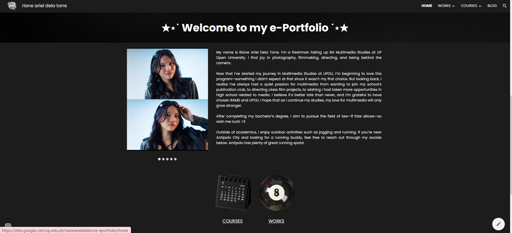

My UPOU BAMS E-Portfolio
Originally started for MMS 100, this e-portfolio houses my earlier coursework and outputs from MMS 100, MMS 101, and MMS 170. It is the project I am most proud of because I built it back when I didn't have much technical skill yet—making it a meaningful milestone of where my multimedia journey began.
